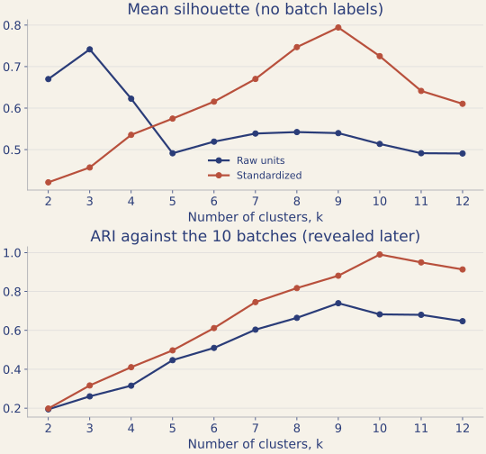

分群：它說有 9 種，你要相信嗎？
你接到一份沒見過的產線資料，AI 也沒見過。它算得出數字，也會給你肯定的群數，但它不知道你要拿這個答案做什麼。 你要帶走的能力：判斷 AI 的結論，是否回答了你真正想問的問題。
這一關的資料
課前你已把 data/line_modes.csv 下載到專案裡：一條產線的 723 筆感測讀數，有溫度、振動、壓力、流量、電流、轉速，另外兩欄是韌體版本和取樣週期。檔案裡沒有答案欄。
真實工作上，你拿到的資料多半沒有名氣，AI 也沒看過，背後的情況只有現場的人知道。這份資料就是用來模擬這件事。它不是用來證明 AI 很差，AI 算的數字多半是對的，你要看的是它缺資訊時怎麼處理。
分群是先不看答案，依資料的相似程度把樣本分組。每筆讀數是一個樣本，也是空間中的一個點：6 個感測值就是 $\mathbb{R}^6$ 中的向量。兩筆讀數的相似程度，可以用歐氏距離來量。
什麼是「分群」？跟「分類」差在哪？
這是機器學習裡最基本的一組區分：
| 分類（classification） | 分群（clustering） | |
|---|---|---|
| 你有什麼 | 資料 ＋ 正確答案 | 只有資料 |
| 在做什麼 | 學一個規則，看到新資料能說出它屬於哪一類 | 看資料自己長成幾坨，把靠近的歸在一起 |
| 術語 | 監督式（supervised） | 非監督式（unsupervised） |
| 本工作坊 | Lab 3 | Lab 1（現在這關） |
分群演算法看不到答案。 這份資料的批次紀錄要到揭曉時才給，k-means 全程看不到。 它只看得到每筆感測讀數，得自己決定誰跟誰是一夥的。
所以就算資料來自幾個批次，演算法也不會知道。它能告訴你的，只有幾何上怎麼分比較開。
k-means 到底在做什麼？（三行講完）
給定你想分幾群（那個 $k$），演算法先挑起點，再反覆做兩件事，直到不變為止：
- 隨機挑 $k$ 個點當「中心」$\boldsymbol{\mu}_1,\dots,\boldsymbol{\mu}_k$
- 指派：每個資料點歸到離它最近的那個中心
- 更新：每個中心移動到自己那群所有點的平均位置
然後回到第 2 步，直到沒有點再換群為止。
它在最小化什麼
整個過程在最小化這個量，sklearn 把它叫做 inertia_：
（$c(i)$ 是第 $i$ 個點被分到哪一群。）白話：每個點到自己那群中心的距離平方，全部加起來。
第 3 步「取平均」不是隨便定的。它是微積分算出來的： 固定分群之後，對 $\boldsymbol{\mu}$ 微分並令其為零， $\frac{\partial J}{\partial\boldsymbol{\mu}_j}=-2\sum_{i\in C_j}(\mathbf{x}_i-\boldsymbol{\mu}_j)=0$， 解出來就是 $\boldsymbol{\mu}_j=\frac{1}{|C_j|}\sum_{i\in C_j}\mathbf{x}_i$，也就是群內平均。 這就是你在微積分課上做的「令導數為零求極值」。
順帶一提：每一步不會讓 $J$ 變大；實作會在分群不再改變、變化小於容差，或達到最大迭代次數時停止。
但停下來的地方不保證是全域最小。所以才要設
n_init=10（跑 10 次不同起點取最好的），以及為什麼要固定
random_state 才能重現結果。
先動手：k-means 怎麼分群？
這些是 44 個合成的平面點，不是產線資料。先猜：你會分成幾群？為什麼？猜完再操作。
k-means 只做兩件事：把每個點分給最近的中心，再把中心移到該群的平均位置，反覆到不再變動。按「走一步」看它怎麼做。
n_init），不要反推 AI 的 k-means 不穩。- 距離平方和 J（越小越緊）
- silhouette（越大越分得開）
- 狀態
把 k=2、3、4 都跑到底，記下 J 和 silhouette，再多按幾次「換起點」。
- k 變大，J 怎麼變（起點差時可能例外）？silhouette 選了幾群？它把哪兩團併在一起？
- 距離變小或分數變高，就是你的目標嗎？如果靠近的兩團是兩種不同的東西呢？
- 剛才的 k、指標和起點，是誰選的？之後 AI 替你跑的時候，又是誰選的？
動手
先照平常的方式問
如果已在 OpenCode 裡，先輸入 /new；還沒啟動就在專案資料夾輸入 opencode。左下角應顯示 Build · Big Pickle。貼上這句，不要補充任何條件：
data/line_modes.csv 是產線感測讀數，幫我看有幾種運作模式。等它回答時，每個權限要求都讀一下，看它實際跑了什麼。
判斷：接受、保留，還是拒絕？
看完回答，先別追問。在 notes/ 或紙上寫下：
- 你會接受、保留，還是拒絕這個答案？
- 它用的方法你學過嗎？它做了哪些你沒要求的事（標準化、寫檔、畫圖）？
- 它說的「可信」「明確」，是對什麼而言？還缺什麼資訊，你才敢把答案交給別人用？
如果它用了你沒學過的方法，不必硬著頭皮相信，可以追問：
請只用 k-means 和 silhouette 重算，列出你替我做的每個決定，先不要下結論。和鄰座對一下答案。答案一樣也先別放心：這只表示做法相近，不表示符合你的用途。如果它先問你要拿來做什麼，那很好：回答它，再看建議怎麼變。
寫完判斷再打開：講師實測
2026-11-02、03，OpenCode 1.19.5 互動模式，每次都是新對話。
| 模型 | 它給的答案 |
|---|---|
big-pickle（3 次，課堂預設） | 9 種、9 種、9 種 |
Gemini 3.5 Flash Lite（3 次） | 4 種（另提可細分為 6 種）、9 種、4 種（另提可細分為 5 至 6 種） |
GLM-5.3-Flash（3 次） | 9 種、7 種、9 種 |
9 次都直接給了群數（2 次附帶可細分的備選），沒有一次先問要拿來做什麼。其中一次寫「BIC 明確指向 9，可信度較高」，另一次寫「證實是 7 個完全分離的緊密群」。
這裡的數字多半算得對，差別在它替你做的決定。big-pickle 3 次都用了 GMM 和 BIC，也換隨機種子確認過很穩定。穩定只表示同樣的做法會得到同樣的結果，還回答不了這個答案夠不夠你用。樣本很少，所以這不是模型排名，你那次也可能不一樣。
揭曉：現場的人知道什麼
寫完判斷再打開：需求卡與結果
寫完判斷再往下看。這是資料管理員後來補給你的資訊：
- 這 723 筆來自 10 個生產批次。批次 1 和批次 10 的設定相近。
- 任務 A：整理巡檢手冊，相近的狀態可以合併。
- 任務 B：追蹤每筆讀數來自哪個批次，出問題時要能回查。
- 批次紀錄可以拿來算 ARI：分群和批次分組完全一致時為 1，亂分約為 0。silhouette 則不看批次，只看幾何上分不分得開。
下載批次紀錄。它只用來檢查，選 k 時不能用。在 OpenCode 裡按 ! 進 Shell 模式，再執行：
curl -fsSL https://phonchi.github.io/opencode-math-workshop/assets/data/reveal/line_modes_batches.csv -o data/line_modes_batches.csv先想：AI 的答案對任務 A 夠用嗎？對任務 B 呢？如果它說的不是 10，算它錯嗎？
規劃：寫目標卡，再問一次
和鄰座各挑一個不同的任務。先在 notes/ 或紙上填好，互相指出對方一個還模糊的詞：
我的用途是＿＿；可以合併／不能合併的情況是＿＿；我用＿＿證據判斷。
再用目標卡改寫第一句，/new 後貼上。也要交代它列出替你做的決定。程式存成 lab1_cluster.py，圖存到 figs/lab1_k_selection.png。比較兩人的選擇和理由。答案不一定不同，任務 A 也可能選 10；要看的是它是否符合各自的用途。
問完再打開：講師實測
2026-11-02，GLM-5.3-Flash 3 次，prompt 只說明要追蹤批次、不能合併、批次紀錄只能檢查，不能用來選 k，沒有說幾批，也沒有限定 k。
- 3 次都建議 k=10，也都列出它替你做的決定（模糊問時，同一個模型答 9、7、9）。
- 但 3 次都是先看到 silhouette 最高是 9，再用批次紀錄淘汰 9、改選 10。你說不能用它選 k，它也說只拿來檢查，實際上這就是用它選了 k。結果對，不代表照你的規則做。讀它列出的決定，才看得出來。
另一組 prompt 寫得更具體（共 10 批，只比 k=9 和 k=10，用 ARI 判斷），兩個模型各 3 次也都答 k=10。其中 2 次 Gemini 保留了兩個常數欄；標準化後它們都變成 0，不影響距離和分群。Gemini 3.5 Flash Lite 只有這組紀錄，上面那組當天額度用完。
回頭看模糊問的那 3 次 big-pickle：它答 9 種，最大的一群有 159 筆，正好是批次 1 的 73 筆加批次 10 的 86 筆。其中 1 次還看到 gap statistic 偏好 k=10，判定 k=10「只是把最大的一群（159 筆）硬拆成兩群」。對任務 A 這樣可能夠用，對任務 B 就把要分開追蹤的兩批併掉了。它不知道任務，再穩定也判斷不了。
把目標說清楚有幫助，但不代表不用驗。
你應該能回答這三個問題：
- 原始尺度和標準化，選出的 k 一樣嗎？
- silhouette 最高的 k，和批次 ARI 最高的 k，是同一個嗎？
- 那你會怎麼回答任務 A 和任務 B？
誰錯了
做完第 4 步再往下讀。下面是講師用參考程式算的結果（reference/lab1_cluster.py，random_state=0、n_init=10）。你的方法不同，數字也可能不同。
| 做法 | silhouette 最高的 k | 分數 | 這個 k 對 10 個批次的 ARI |
|---|---|---|---|
| 原始尺度 | 3 | 0.7416 | 0.261 |
| 標準化 | 9 | 0.7943 | 0.881 |
| 標準化，直接指定 k=10 | 10（不是最高） | 0.7252 | 0.990 |

k=9 把批次 1 和批次 10 併成一群，其他批次都分得開。對任務 A，這可能正好合適；對任務 B，就是把兩個批次混在一起。
所以 AI 說 9 並沒有算錯。問題在於它還不知道你要做什麼，就給了答案。如果它沒說自己標準化了，你也不會知道為什麼你的同學算出 3。
silhouette 在量什麼
對每個點 $i$，設 $a(i)$ 是它到同群其他點的平均距離，$b(i)$ 是它到最近的其他群所有點的平均距離，則
整體分數是所有 $s(i)$ 的平均。它衡量群內夠不夠緊、群間夠不夠開，完全沒有用到批次紀錄。
ARI（adjusted Rand index）則要拿分群結果和批次紀錄比，分數 1 表示分組完全一致，和群的編號無關。
silhouette 詳解：公式怎麼來、分數怎麼讀
$a(i)$ 與 $b(i)$ 的完整定義
設資料點 $x_i$ 屬於群 $C_i$，$d$ 是所用的距離。$a(i)$ 衡量群內凝聚度，越小表示它和同群的點越接近：
$$a(i)=\frac{1}{|C_i|-1}\sum_{x_j\in C_i,\ j\neq i}d(x_i,x_j)$$分母是 $|C_i|-1$，因為不計算點到自己的距離。接著計算 $x_i$ 到每個其他群的平均距離，取最小值，得到衡量群間分離度的 $b(i)$：
$$b(i)=\min_{C_k\neq C_i}\ \frac{1}{|C_k|}\sum_{x_j\in C_k}d(x_i,x_j)$$注意，$b(i)$ 不是到最近那一個點的距離，而是到「平均距離最小的那一群」的平均距離。
手算一個例子
一維資料分成兩群：$A=\{0,1,3\}$、$B=\{8,10\}$，距離用絕對值。看 $x=1$ 這個點：
$$a=\frac{|1-0|+|1-3|}{2}=1.5,\qquad b=\frac{|1-8|+|1-10|}{2}=8,\qquad s=\frac{8-1.5}{8}=0.8125$$分數接近 $1$，表示這個點和自己這群比和另一群接近得多。
為什麼要除以 $\max\{a,b\}$
分子 $b-a$ 已經能看出好壞，但它會受距離尺度影響。下面兩列的相對關係完全相同，只差在距離的單位：
| a | b | b − a | s |
|---|---|---|---|
| 1 | 5 | 4 | 0.8 |
| 10 | 50 | 40 | 0.8 |
除以較大的距離後，把所有距離乘上同一個正數，分數也不會改變。分數還會自然落在 $[-1,1]$，把公式分情況寫開就看得出來：
$$s(i)=\begin{cases}1-\dfrac{a(i)}{b(i)}, & a(i)<b(i)\\[1ex] 0, & a(i)=b(i)\\[1ex] \dfrac{b(i)}{a(i)}-1, & a(i)>b(i)\end{cases}$$分數怎麼讀
| 分數 | 意義 | 例子 |
|---|---|---|
| 接近 1 | a 遠小於 b，這個點和自己這群很近、和其他群很遠 | a = 1、b = 5，s = 0.8 |
| 接近 0 | a 和 b 差不多，這個點位於兩群交界 | a = 3、b = 3，s = 0 |
| 小於 0 | 平均而言，這個點離某個其他群比離自己這群還近 | a = 5、b = 2，s = −0.6 |
負分不一定代表演算法算錯，也可能是資料本身有重疊，或目前的距離度量不適合這份資料。
從單點到整體
整體分數是所有點的平均：
$$S=\frac{1}{n}\sum_{i=1}^{n}s(i)$$例如五個點的分數是 $0.8,\ 0.7,\ 0.6,\ 0.2,\ -0.3$，則 $S=2.0/5=0.4$。平均值會掩蓋個別的點，分數很低的點可能比較適合待在別群。
用來選 $k$ 的限制
常見做法是掃過不同的 $k$，看哪個分數最高。但最高分不一定是真實的類別數，因為這個指標偏好緊密且明顯分開的群。遇到月牙形這類非凸的群，或密度、大小差異很大的群，結果可能不如預期。
沒用真實標籤，但有用分群標籤
- 分群標籤：演算法產生的群編號。計算 $a(i)$、$b(i)$ 需要它
- 真實標籤：資料原本的類別，例如這份資料的批次。silhouette 用不到它
所以 silhouette 是內部驗證指標。下一節的 ARI 要和真實標籤或另一組分群比較，屬於外部驗證指標。
兩個邊界情況
- 某群只有一個點時，$a(i)$ 的分母是 $0$，scikit-learn 的慣例是把這個點的分數定為 $0$
- 計算整體分數時，群數 $k$ 要滿足 $2\le k\le n-1$
回到本 Lab：標準化後最高分 0.7943，k=10 也有 0.7252，兩者都不低。分數高只表示幾何上分得開，不代表它回答了你的問題。
ARI 是什麼？為什麼要「調整」？
不能直接比編號
分群的編號是任意的。下面的編號完全相反，但 A、B、C 仍在一起，D、E、F 也在一起，分群其實是完美的：
| 資料點 | A | B | C | D | E | F |
|---|---|---|---|---|---|---|
| 真實類別 | 0 | 0 | 0 | 1 | 1 | 1 |
| 分群結果 | 1 | 1 | 1 | 0 | 0 | 0 |
所以要比的是「任意兩個點有沒有被放在一起」這個關係。
Rand index（RI）：數配對
把所有點兩兩配對，總共 $M=\binom{n}{2}$ 對。對每一對問：這兩個點在真實標籤裡同類嗎？在分群結果裡同群嗎？兩邊答案一致就算一對。
$$\text{RI}=\frac{TP+TN}{M}$$$TP$ 是兩邊都說同群的配對數，$TN$ 是兩邊都說不同群的配對數。這裡數的都是配對，不是單一資料點。
舉例來說，四個點的真實類別是 $0,0,1,1$，分群結果是 $0,0,0,1$，共 $\binom{4}{2}=6$ 對：
| 配對 | 真實同類？ | 分群同群？ | 一致？ |
|---|---|---|---|
| A, B | 是 | 是 | 一致 |
| A, C | 否 | 是 | 不一致 |
| A, D | 否 | 否 | 一致 |
| B, C | 否 | 是 | 不一致 |
| B, D | 否 | 否 | 一致 |
| C, D | 是 | 否 | 不一致 |
有 3 對一致，所以 $\text{RI}=3/6=0.5$。
為什麼要「調整」
RI 有個毛病：就算亂分，也會拿到不低的分數。假設有 100 個點，真實分成 10 類，每類 10 個點：
$$M=\binom{100}{2}=4950,\qquad 10\binom{10}{2}=450$$4950 對裡只有 450 對同類，其餘 4500 對本來就不同類，而亂分也很容易把它們分開，於是 $TN$ 自然很大。這就像 95% 的資料都是負類時，永遠猜負類也有 95% 的準確率。
算出隨機分群的期望值
標準 ARI 的隨機模型是：固定兩邊各群的大小，只隨機打亂標籤。設真實各類大小為 $a_k$，分群各群大小為 $b_\ell$，同群的配對數分別是
$$A=\sum_k\binom{a_k}{2},\qquad B=\sum_\ell\binom{b_\ell}{2}$$在這個模型下，一對點在真實標籤同類的比例是 $A/M$，在分群結果同群的機率是 $B/M$，兩者獨立相乘，所以
$$\mathbb{E}[TP]=M\cdot\frac{A}{M}\cdot\frac{B}{M}=\frac{AB}{M},\qquad \mathbb{E}[TN]=M\left(1-\frac{A}{M}\right)\left(1-\frac{B}{M}\right)$$代回 RI 並整理：
$$\mathbb{E}[\text{RI}]=1-\frac{A+B}{M}+\frac{2AB}{M^2}$$把 $A=B=450$、$M=4950$ 代入，得到 $\mathbb{E}[\text{RI}]\approx 0.835$。只靠隨機排列，RI 的期望值就有約 0.835。實際隨機排列 5000 次取平均，RI 約為 0.8347，和公式一致。
ARI：扣掉隨機基準
$$\text{ARI}=\frac{\text{RI}-\mathbb{E}[\text{RI}]}{1-\mathbb{E}[\text{RI}]}$$分子是比隨機多出多少，分母是比隨機最多能多出多少。例如同樣是 100 個點，$\text{RI}=0.9$ 看起來很高，但
$$\text{ARI}=\frac{0.9-0.8347}{1-0.8347}\approx 0.395$$前面四個點的例子也一樣：$A=2$、$B=3$、$M=6$，算出 $\mathbb{E}[\text{RI}]=0.5$，所以 $\text{RI}=0.5$ 其實只等於隨機基準，$\text{ARI}=0$。
上式可以再整理成文獻常見的形式，其中 $n_{ij}$ 是真實第 $i$ 類和分群第 $j$ 群共有的點數：
$$\text{ARI}=\frac{\sum_{ij}\binom{n_{ij}}{2}-\dfrac{AB}{M}}{\dfrac{1}{2}(A+B)-\dfrac{AB}{M}}$$分子的 $\sum_{ij}\binom{n_{ij}}{2}$ 就是 $TP$，$AB/M$ 就是它的隨機期望值。
分數怎麼讀
| ARI | 意義 |
|---|---|
| 1 | 和真實標籤的分組完全一致（編號可以不同） |
| 接近 0 | 和這個隨機基準差不多，不能據此斷言資料中完全沒有資訊 |
| 小於 0 | 一致程度比隨機基準還差 |
「隨機時期望值為 0」只對固定群大小的隨機排列模型成立，換一種亂分方式不一定如此。
和 silhouette 的差別
| silhouette | ARI | |
|---|---|---|
| 需要真實標籤 | 不需要 | 需要 |
| 看的東西 | 點與點的距離 | 點與點是否同群 |
| 評估重點 | 幾何上的分離程度 | 和真實類別的一致程度 |
| 最佳值 | 1 | 1 |
| 隨機基準 | 沒有固定為 0 | 上述模型下期望值為 0 |
兩者不一定同高。真實類別在空間中重疊時，演算法可能找到幾何上分得很開、卻和真實類別不一致的分法，也就是 silhouette 高、ARI 低；反過來，分群不夠緊密，也可能和真實類別很一致。所以兩個指標常一起報告。
AI 不知道你要什麼時，還是可能給你一個肯定的答案。往後每次看到「判定為」「建議」，先找出它做了哪些你沒要求的決定，再把結論改寫成帶條件的句子，例如：「標準化後以 silhouette 比較 k=2 到 12 時，k=9 最高；若要追蹤批次，k=10 較合適。」
檢查清單
如果還有時間
- 挑一個自己想試的變化，例如換指標或拿掉一欄，和鄰座比較。
- 請它列出每群包含各批次的筆數，自己找出哪兩個批次被併在一起。
- 用不同
random_state重跑，看 k=9 和 k=10 的排序穩不穩定。 - 問它：「inertia 為什麼隨 k 遞減？用數學證明給我看。」再自己檢查：k-means 找到的是局部解，實務上偶爾會不單調。
寫完再對照：一份參考的清楚版 prompt
用 data/line_modes.csv 做 k-means 分群。先拿掉標準差為 0 的欄位，再標準化。
掃過 k = 2 到 12，每個 k 都記錄 silhouette，也算一次不標準化的結果做對照，
逐項印出數值，並把兩條曲線畫到 figs/lab1_k_selection.png。
要求：
- 選 k 時不可以使用 data/line_modes_batches.csv
- random_state 固定為 0，n_init=10
- 寫成 lab1_cluster.py，用 uv run python 執行
- 選好 k 之後，再用批次紀錄算 k=9、k=10 的 ARI，並列出每群包含哪些批次
- 最後分別回答：巡檢手冊適合幾群？追蹤批次適合幾群？